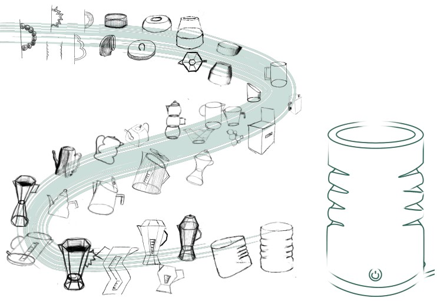
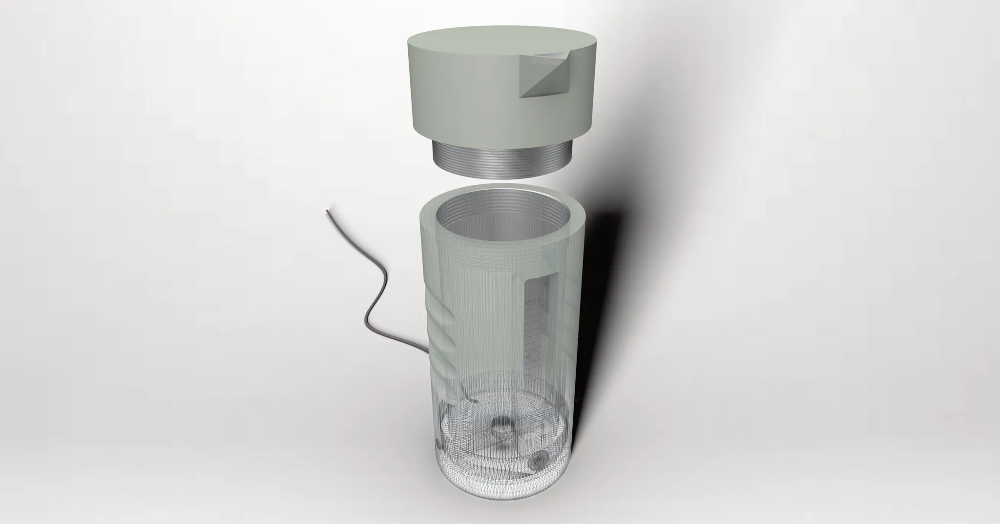
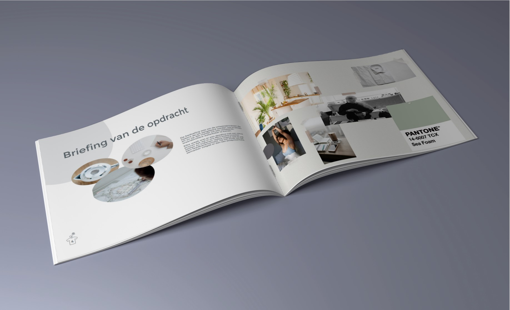

In het tweede semester van het eerste jaar bachelor werd de opdracht gegeven om een waterkoker te ontwerpen. Dit moest gedaan worden aan de hand van een voorgaand onderzoek en gebruikerstesten. De waterkoker moest dus een meerwaarde toevoegen aan de de waterkokers die al op de markt zijn. Tijdens deze testen en interviews met de gebruikers legde ik de focus op "de ochtendroutine" en hoe ik deze efficienter kon maken met mijn waterkoker. Ik merkte op dat het regelamtig voor kwam dat er in de ochtend werd opgemerkt dat een hemd dat men die dag wou dragen nog niet gestreken bleek te zijn of terug verkreukeld was tijdens het opbergen in de kast. Waarbij daarna werd gekozen om dit kledingstuk nog vlug te strijken of om geïrriteerd een ander kledingstuk uit te kiezen.
Daarom koos ik ervoor om mijn waterkoker een extra functie te geven, namelijk strijken. Aangezien vele mensen in de ochtend thee of koffie zetten en daar dus al kokend water/stoom bij komt kijken.
In de ideefase zijn er eerst een aantal schetsen gemaakt tot ik op een vorm kwam die ergonomisch geschikt leek en deze is dan vervolgens in schuim gemaakt. Er was nog te kiezen voor een handvat of voor een model met insnijdingen voor de vingers. Uit de gebruikerstesten bleek dat de insijdingen makkelijker waren als het op het strijken aankwam.

Er is dus gekozen voor een schroefdog waarbij er kan gewisseld worden tussen een dop voor de gewone waterkoker en dan een dop om te strijken. De buitenkant van de waterkoker zal ook bestaan uit een goed isolerend rubber zodat er geen gevaar is op brandwonden.
In het eerste semester van het tweede jaar is er dan ook aangeleerd hoe een goede render gemaakt kan worden van een product in het vak "Grafische Ontwerpcommunicatie" Er waren ook lessen fotoshop waarbij er ook een mooie ontwerpbundel is samengesteld en er werd ook een mock-up gemaakt van deze bundel zoals hieronder te zien.
